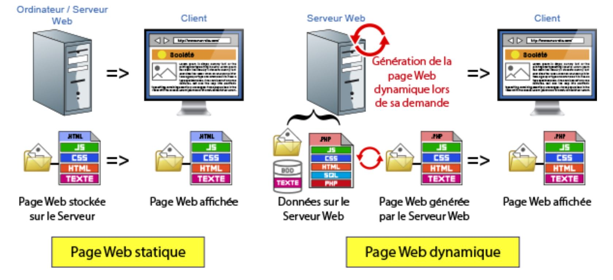

1. Le Web c’est quoi ?
-
Le Web est un système de documents hypertextes (liés entre eux) fonctionnant sur Internet de façon décentralisée
-
Mis au point par
Tim Berners-Lee(CERN) entre 1989 et 1991 -
Constitué de trois éléments fondamentaux :
-
un système d’identificateurs uniques pour les documents (
URL) -
un langage de balisage pour les documents (
HTML) -
un protocole de transfert de documents (
HTTP)
-
-
Internetest l’ensemble de réseaux mondiaux interconnectés qui permet à des ordinateurs et à des serveurs de communiquer efficacement au moyen d’un protocole de communication commun (IP).Il fournit l'infrastructure physique et les protocoles nécessaires pour permettre la transmission de données et la communication entre les appareils du monde entier.
Ses principaux services sont le Web, le FTP, la messagerie et les groupes de discussion.
2. Brève histoire du Web
-
1969 : Création de ARPEnet, un réseau militaire décentralisé
-
1972 : Apparition des Emails
-
12 Mars 1989 : Première Version du Web , Tim Berners pose les bases du concept dans un document "gestion de l'information ".
-
20 Décembre 1990 : Premier Site WEB sur l'intranet du CERN\ et Création protocole HTTP + 1er éditeur hypertexte*
-
30 Avril 1993 : La technologie devient publique et Open Source - Lancement du 1er navigateur 🡪 Netscape
-
Janvier 1993 : Yahoo conçoit le 1er annuaire des sites disponibles classés par thématiques
-
Octobre 1994 : Tim Berners Créé le W3C
-
Novembre 1995 : Premier Standard de HTML (RFC 1866) publié par la W3C
-
Juillet 1995 : Lancement d’Amazon.com
-
Aout 1995 : Sortie d’Internet Explorer (logiciel en option de Windows 95 !)
-
1998 : Création du moteur de recherche Google
*CERN : Centre Européen de Recherche Nucléaire
1.3 Principes de base du Web
Le web est une application (ou plus précisément une plateforme d’applications) client-serveur.
-
N’importe quelle machine connectée à Internet peut être un serveur web :
-
elle écoute sur son port 80
-
elle interprète les requêtes HTTP reçues
-
elle renvoie les réponses HTTP, contenant du HTML, au demandeur
-
-
Un client est un navigateur web (comme Firefox ou Chrome) :
-
il envoie des requêtes HTTP aux serveurs
-
il interprète le HTML reçu en réponse et met en forme le document
-
-
Les pages HTML contiennent des liens unidirectionnels vers d’autres pages, pas forcément sur le même serveur, identifiées par une URL
-
Lors d’un clic sur un lien, le navigateur web effectue la requête HTTP correspondant à l’URL
3. Relation client - Serveur
-
Le client souhaite accéder à une ressource : Requête HTTP à la ressource correspondant à l'URL
-
Le navigateur client télécharge la page pour pouvoir l’afficher grâce à une réponse http
4. Les URL
-
Uniform Resource Locator : adresse d’une ressource. Sur le web, c’est généralement une page.
-
Une URL contient toutes les informations nécessaires pour récupérer la ressource.
-
le protocole (http:// ou https:// pour des pages web, file:// pour un fichier local…)
-
le nom de domaine du serveur(ici: ozenne : c’est la « machine » du domaine mon-ent-occitanie.fr. Les serveurs web s’appellent souvent www pour des raisons historiques) -
le chemin vers le fichier auquel on accède (ici: /le-lycee-ozenne/actualites/rentree-scolaire-2021-2022—2667272.html)
-
Le type de format des ressources est propre à l’environnement technique utilisé.
-
Exemples :
-
itexpert.fr/apropos/
-
w3schools.com/react/default.asp
-
youtube.com/watch?v=1NAHAN7hBWVW
-
google.com/search?q=recherche+google+complexe&client=firefox-b-d&sca_esv=a06be63c3ea1cbb9&sxsrf=ADLYWIJsRBg7Wvg-6ePM9hQ22p8jrHM7pQ%3A1725122167085&ei=d0bTZpbqBN-mkdUP1vaQqAU&ved=0ahUKEwjWgdrv1J-IAxVfU6QEHVY7BFUQ4dUDCBA&uact=5&oq=recherche+google+complexe&gs_lp=Egxnd3Mtd2l6LXNlcnAiGXJlY2hlcmNoZSBnb29nbGUgY29tcGxleGUyBhAAGBYYHjIGEAAYFhgeMggQAAoYHsICCBAAGBYYHhgPwgIHEAAYgAQYDcICCBAAGAgYDRgemAMAiAYBkAYLugYECAEYCLoGBggCEAEYE5IHBDIyLjWgB8zVAQ&sclient=gws-wiz-serp
-
-
5. Le protocole HTTP
|
Rappel : Un protocole informatique est un |
-
HyperText Transfer Protocol : c’est le langage que parle le serveur web et le navigateur web pour se communiquer les pages.
-
C’est l’élément le plus fondamental du web, et aussi le plus caché pour le grand public.
-
Cependant :
-
son nom apparaît au début des URL (mais les navigateurs actuels ne l’affichent plus)
-
les célèbres cookies sont un élément du protocole
-
certains codes de statut sont bien connus… (erreur 404)
-
-
HTTPS est la version sécurisée de HTTP : les messages sont chiffrés, et donc illisibles pour quiconque les intercepterait entre le client et le serveur
Le but d’un protocole comme HTTP c’est d’être standardisé pour être exploité par tout type de client et de serveur.
6. Requête HTTP
GET /blog/posts/243.html HTTP/1.1
Host: www.toto.fr
Accept: text/html
Accept-Charset: utf-8
Connection: keep-alive-
Structure d’une requête HTTP :
-
Une ligne de requête avec une
commande(request method), uncheminet laversion du protocole -
Plusieurs lignes de champs d’en-tête
-
Une ligne vide
-
Le corps du message (optionnel)
-
-
Commandes :
GET,POST,HEAD,PUT,DELETE… -
Champs d’en-tête :
Host,User-Agent,Accept… seul Host est obligatoire
Contrairement aux en-têtes, qui suivent des normes structurées et standardisées, le corps du message HTTP peut contenir des données dans divers formats:
-
HTML
-
Plain Text
-
JSON
-
XML
-
URL-Encoded Form Data
-
Multipart/Form-Data
-
etc…
Le format est généralement déterminé par l’en-tête Content-Type et peut varier en fonction des besoins de l’application ou du type de données échangées.
-
Principales méthodes des requêtes : Mot clé qui permet d’indiquer l’objectif de la requête au serveur web
-
GET: récupère une ressource -
POST: Envoie des données -
PUT: Modifie des données -
DELETE: supprime des données
-
7. Réponse http
-
Structure d’une réponse HTTP :
-
Une ligne de statut avec le status
codeet un petitmessageexplicatif -
Plusieurs lignes de champs de réponse
-
Une ligne vide
-
Le corps du message (optionnel), typiquement le code HTML de la page
-
-
Codes : 200 (OK), 404 (not found), 500 (internal server error)…
-
Champs de réponse : Content-type, Last-Modified, Location…
1ère partie
Code http
Code à 3 chiffres qui permet d’indiqué si la requête à aboutit, s’il y a une erreur et la raison de cette erreur
Exemple de code :
-
200 OK` : La requête à bien été interprété sans erreur -
404 NOT FOUND: Ressource introuvable -
500 INTERNAL SERVER ERROR: Erreur côté serveur
8. HTML
-
HyperText Markup Language, « langage de balisage hypertexte » : c’est le langage dans lequel les pages web sont écrites.
-
Structure de la Page :
-
HTML utilise des balises (tags) pour définir la structure du contenu. Ces balises permettent de structurer le contenu en blocs, titres, sections, etc.
-
-
-
Forme du Texte :
-
HTML permet de spécifier la mise en forme du texte, comme les mots importants, les styles, et les paragraphes.
-
-
Contenu Non Textuel :
-
HTML peut aussi inclure des éléments non textuels comme des liens, des images, des vidéos, etc.
-
-
Interprétation par les Clients
-
Le HTML est interprété différemment suivant le type de client (user agent)
-
9. Autres éléments du Web
-
Le HTML représente le contenu d’une page et sa sémantique ; pour contrôler son apparence visuelle, un autre langage est utilisé,
CSS -
Langages de programmation
côté serveur:-
Aux débuts du web, le contenu des sites étaient
statiques: l’auteur écrivait despages HTMLet les gens les lisaient. -
Très rapidement sont apparus les
sites dynamiques, permettant aux internautes demodifier leur contenu. -
Pour cela, le serveur web doit utiliser
une base de donnéespour stocker les informations qui changent… et il doit sans cessegénérer des pagesmises à jour avec les nouvelles informations. -
Cela nécessite un « langage de programmation côté serveur ». Le plus connu est
PHP, mais il est aussi possible d’utiliser Java (J2EE), Python (Django), Ruby (Ruby on Rails), Node… -
Une page HTML-CSS est très peu interactive. Même si le site est dynamique, le contenu n’est pas directement manipulable (par ex., Google Maps ne pourrait pas exister uniquement en HTML-CSS). Le langage utilisé pour rendre les pages interactives s’appelle
JavaScript.
-
10. Site dynamique vs site statique
Exercice
-
Définir un site web statique et d’un site web dynamique et présenter de façon schématique leur fonctionnement

Un site web statique :
Ce sont des sites réalisés uniquement à l'aide des langages HTML et CSS. Ils fonctionnent très bien mais leur contenu ne peut pas être mis à jour automatiquement : il faut que le propriétaire du site (le webmaster) modifie le code source pour y ajouter des nouveautés. Ce n'est pas très pratique quand on doit mettre à jour son site plusieurs fois dans la même journée ! Les sites statiques sont donc bien adaptés pour réaliser des sites « vitrine », pour présenter par exemple son entreprise, mais sans aller plus loin. Ce type de site se fait de plus en plus rare aujourd'hui, car dès que l'on rajoute un élément d'interaction (comme un formulaire de contact), on ne parle plus de site statique mais de site dynamique.Le client envoie une requête au serveur qui se contente de renvoyer la page demandée. Le serveur ne fait aucun travail sur la page en question, d'où le terme “statique”.On utilise un site statique lorsque l'on a juste besoin de présenter des informations. On parle alors de site vitrine. Créer une page web statique est très simple et est à la portée de tous.
Un site Web dynamique :
Plus complexes, ils utilisent d'autres langages en plus de HTML et CSS, tels que PHP et MySQL. Le contenu de ces sites web est dit « dynamique » parce qu'il peut changer sans l'intervention du webmaster ! La plupart des sites web que vous visitez aujourd'hui sont des sites dynamiques. Le seul prérequis pour apprendre à créer ce type de sites est de déjà savoir réaliser des sites statiques en HTML et CSS. Mais parfois le serveur doit bosser un peu plus dur et c'est le cas pour les sites Web dynamiques. Lorsque le client commande une page au serveur, le serveur prépare cette commande. Il fait un vrai travail dessus avant de la renvoyer au client.C'est grâce à ça que les pages Web peuvent être personnalisées en fonction de chaque client ou en fonction de données externes au site.Par exemple Facebook est un site dynamique. Le contenu est différent et personnalisé pour chaque utilisateur.
-
Présenter les avantages et inconvénients de ces 2 types de site
| Site Statique | Site Dynamique | |
|---|---|---|
Développement |
HTML / CSS |
HMTL / CSS |
Mise-à-jour & |
MAJ manuel du code source |
MAJ via une interface |
Usages |
Site vitrine |
Les blogs, les forums, les sites marchands avec des catalogues, les sites en plusieurs langues |
Avantages |
Serveur plus léger, développement plus facile |
La mise à jour des sites dynamiques est plus facile, grâce à une interface d’administration |
Inconvénients |
Plus lourd à maintenir |
Plus complexe à mettre en oeuvre |
Les pages dynamiques fonctionnent côté serveur, ce qui signifie que le code qui les génère (comme PHP, Python, ou Ruby) est exécuté sur le serveur et n’est pas visible depuis le navigateur. L’utilisateur ne voit que le code source de la page générée (HTML, CSS, JavaScript), mais pas le code de construction.
Se rappeler aussi qu’au final, une page Web est un fichier texte mise ne forme visuellement par un navigateur et ceci quel que soit son extension une fois affichée.
11. Site Web vs Service Web
| Site WEB | Service WEB |
|---|---|
Interface utilisateur |
Ne possède pas d’interface utilisateur |
Conçu pour les utilisateurs multiplateformes car ils nécessitent des ajustements pour fonctionner sur différents navigateurs, systèmes d’exploitation, etc. |
Conçu pour interagir avec d’autres applications WEB Les services Web sont indépendants de la plate-forme car ils utilisent des protocoles ouverts |
Les sites Web sont accessibles à l’aide de leurs composants GUI - boutons, zones de texte, formulaires, etc. |
Les services Web sont accessibles par des méthodes HTTP - GET, POST, PUT, DELETE, etc. |
Portesouvertes.lycee-ozenne.fr est un site Web qui contient une collection de pages Web connexes |
L’API Google Maps est un service Web qui peut être utilisé par les sites Web pour afficher des cartes en lui transmettant des coordonnées. |
12. Site Web vs AppliWeb
| Site web | Appli web | |
|---|---|---|
Objectif principal |
Faciliter la navigation et l’extraction des informations pertinentes pour les utilisateurs qui répondent à leurs besoins |
Etre réactif aux actions des utilisateurs, être interactif et fournir aux utilisateurs la possibilité de manipuler des données et de faire des demandes pour différentes sorties |
Principales caractéristiques et avantages |
Accès facile, mise à jour facile, gain de temps et d’arge,t; publicité facile, satisfaction du client |
Expériennce personnalisée, évolutibilité, optimisation des capacités des appareils, satisfaction client |
Eléments principaux |
Langage de balisage hypertexte (HTML, feuilles de style en cascade (CSS) et Javascript) |
HTML, CSS, Javascript; Utilise en outre des langages de programmation tels que Ruby on Rails, ScriptCase, Angular, Django et MongoDb (BDD) |
13. Site vs Application vs Service Web
| Site web | Application Web | Service Web |
|---|---|---|
Support de communication hébergé sur le WEB, dans le but d’informer |
Logiciel applicatif manipulable sur le WEB qui effectue des tâches spécifiques |
Fonctionnalité permettant la communication et l’échange de données entre applications et systèmes hétérogènes dans des environnements distribués |
- Site Vitrine : flamingobeers.fr |
- Messagerie : gmail, outlook (office365), … |